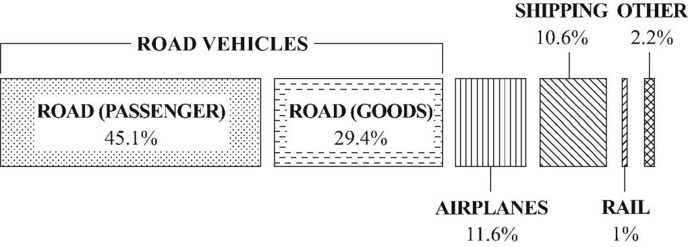
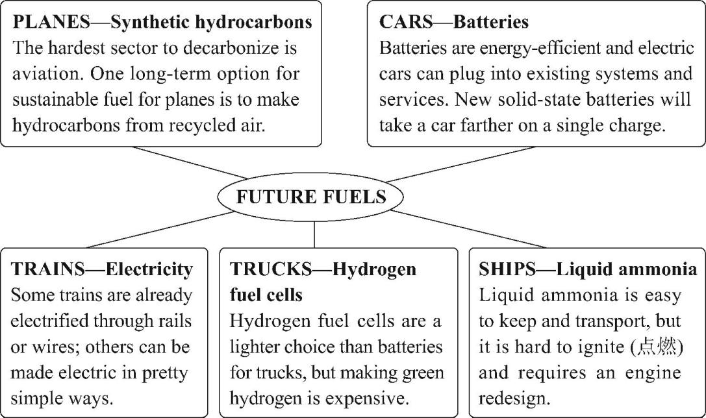

01-2025全国一，A
The greening of planes, trains and automobiles
Moving goods and people around the world is responsible for a large part of global CO2 emissions(排放). As the world races to decarbonize everything, it faces particular problems with transportation—which accounts for about a quarter of our energy-related greenhouse gas emissions. Here's the breakdown of the emissions in 2018 for different modes of transport.

The fuels for transport need to be not just green, cheap and powerful, but also lightweight and safe enough to be carried around. Each mode of transport has its specific fuel needs. Much is still to be settled, but here are some of the solutions to get us going green.

This energy transition(变革) is global, and the amount of renewable energy the world will need is “a little bit mind-blowing,” says mechanical engineer Keith Wipke at the National Renewable Energy Laboratory. It's estimated that the global demand for electricity could more than double by 2050. Fortunately, analyses suggest that renewables are up to the task. “We need to speed up the development of green energy, and it will all get used,” says Wipke.
全部题目与逐题讲解
- A.11.6%.
- B.45.1%.
- C.74.5%.
- D.86.1%.
查看答案与讲解
答案：C
1. C 细节理解题。从文章第一个图可知,公路(客运)排放占比为45.1%,公路(货运)排放占比为29.4%,所以公路车辆排放的总占比为这二者之和,即45.1%+29.4%=74.5%,故选C。
- A.Planes.
- B.Trucks.
- C.Trains.
- D.Ships.
查看答案与讲解
答案：C
2. C 细节理解题。第一个图中提到火车的温室气体排放占比仅为1%,相对其他运输方式占比极低,且第二个图中提到火车实现绿色化的途径是用电驱动,一些火车已经通过铁轨或电线实现了电动化,其他火车也可以用相当简单的方式实现电动化,所以火车能相对更容易地实现绿色化,故选C。飞机的绿化途径中提到“The hardest sector to decarbonize is aviation.(最难实现脱碳的领域是航空)”,所以A项错误;卡车的绿色燃料制造成本比较高,B项错误;船舶的绿色燃料难以点燃,需要重新设计发动机,D项错误。
- A.Limiting fuel consumption.
- B.Putting more effort into renewables.
- C.Improving energy efficiency.
- D.Making electricity more affordable.
查看答案与讲解
答案：B
3. B 细节理解题。根据最后一段中Keith Wipke的话“the amount of renewable energy the world will need is ‘a little bit mind-blowing,’”和“We need to speed up the development of green energy”可知,世界所需的可再生能源数量“有点惊人”,我们需要加快绿色能源的发展,所以我们要在可再生能源上投入更多的精力,故选B。
外刊延伸
互联网时代的终结，可能比我们想象得快
-
Last week, Anthropic announced that its newest artificial intelligence model, Claude Mythos Preview, would not be released to the public, after the company learned it was capable of finding and exploiting vulnerabilities that have gone undetected in critical software systems for decades.
上周，人工智能公司 Anthropic 宣布，其最新人工智能模型 Claude Mythos Preview 将不会向公众发布。该公司此前发现，这款模型能够发现并利用关键软件系统中潜藏数十年、从未被人察觉的安全漏洞。
- undetected
- adj. 未被察觉的
- vulnerability
- n. 漏洞
- exploit
- v. 利用（漏洞）发动攻击；钻空子；利用，开发；n. 攻击代码本身
-
Instead, Anthropic gave access to Mythos — and $100 million in credits to use it — to more than 50 of the world's largest organizations, including Amazon, Apple, Microsoft, Google and JPMorgan Chase, as part of a defensive cybersecurity initiative called Project Glasswing.
相反，Anthropic 转而将 Mythos 的使用权限，以及 1 亿美元的使用额度，开放给了全球 50 余家大型机构，其中包括亚马逊、苹果、微软、谷歌和摩根大通，作为一项名为 “Project Glasswing” 网络安全防御项目的一部分。
- initiative
- n. 主动发起的、带有开创性的行动，倡议
-
If we don't respond carefully and decisively, then the millions of people who stand to gain the most from A.I.’s progress as a programming tool will also be the ones most exposed to attack. Leaving them to fend for themselves could erode the internet as we know it.
如果我们不能谨慎且果断地应对，那么数百万本可从人工智能编程工具的发展中获益最多的人，也将成为最易遭受网络攻击的群体。任由他们独自面对风险，可能会瓦解我们如今所熟知的互联网。
- erode
- v. 侵蚀
- decisively
- adv. 果断地
-
For decades, two kinds of scarcity kept the internet safe — or safe enough. Writing software was hard, so the people who did it were trained, careful and few. Finding bugs was also hard, so the worst flaws stayed hidden, sometimes for decades. It wasn’t a great system. But the difficulty on both sides created a kind of détente that held.
数十年来，两种稀缺性维持了互联网的安全，或者说相对安全。编写软件难度很高，因此从业者都受过专业训练、行事严谨且人数有限。发现漏洞同样不易，因此最严重的缺陷往往能潜藏多年，有时甚至长达数十年。这套机制并不算完善，但两端同时都很难这件事本身，创造出一种得以维系的微妙平衡。
- scarcity
- n. 稀缺性
-
And for the millions of new creators building software for the first time, we need to make it easy for them to build safely. Integrate security into the tools they're already using. Make sure the A.I. that writes the code also protects the code. Not as an add-on and not as a premium feature, but as a default. The détente is over. The flaws are visible. The creators are everywhere. The only question is whether we protect all of them — or just the ones who can afford to protect themselves.
对于数百万首次开发软件的新晋创作者，我们必须让他们能够轻松实现安全开发。将安全防护融入他们日常使用的工具中，确保编写代码的人工智能同时也能保护代码。安全不应是附加功能，也不应是付费专属功能，而应是默认配置。这种平衡已然终结。漏洞暴露无遗，创作者遍布各处。唯一的问题是，我们是保护所有人，还是只保护那些有能力为自身安全买单的人。
- default
- n. 默认